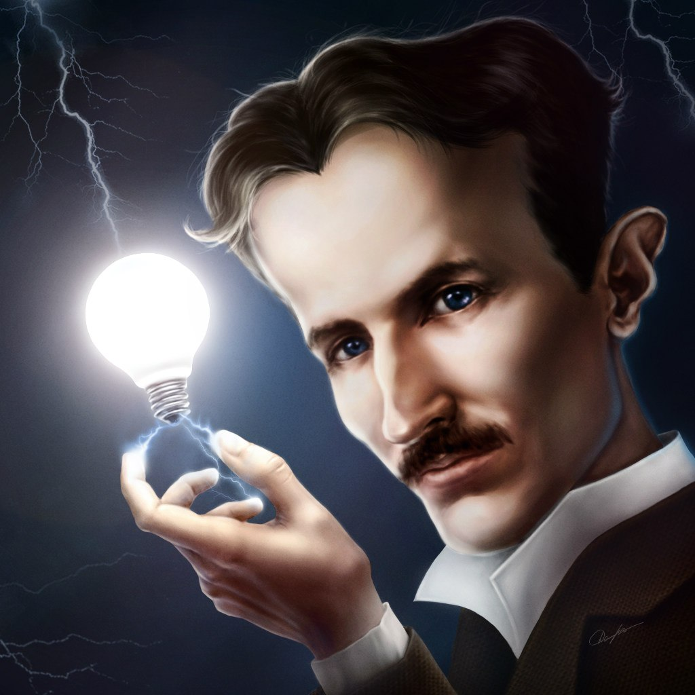
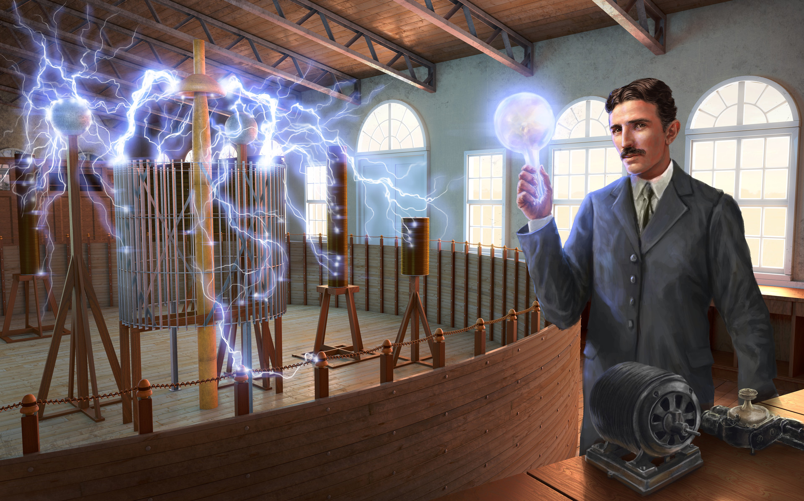
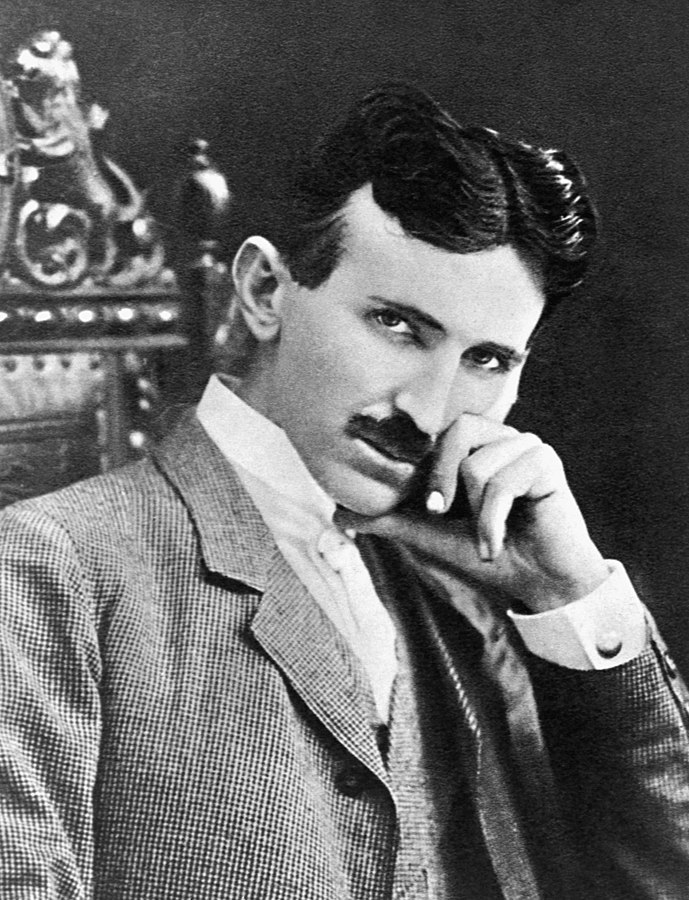
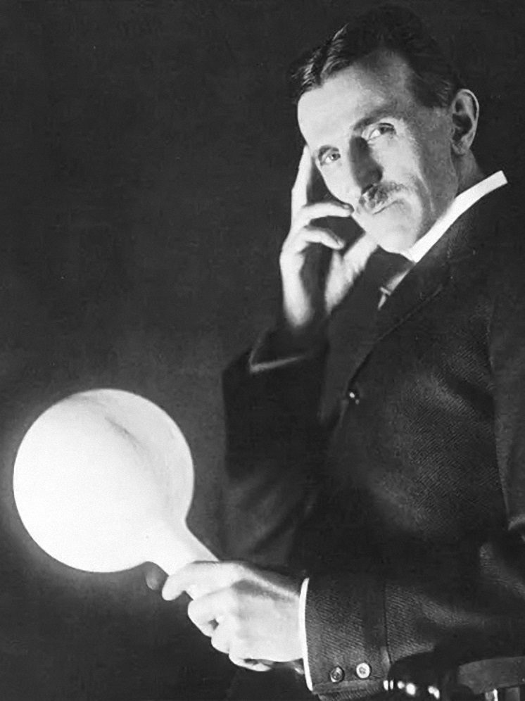
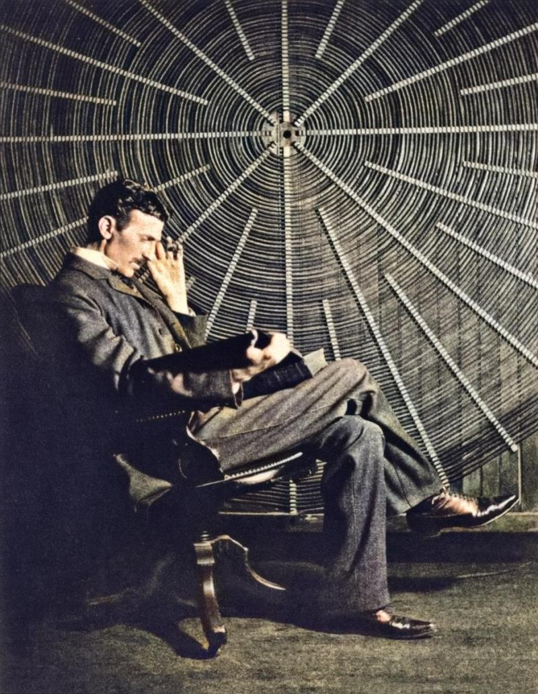

Biography

Born and raised in the Austrian Empire, Tesla studied engineering and
physics in the 1870s without receiving a degree, gaining practical
experience in the early 1880s working in telephony and at Continental
Edison in the new electric power industry. In 1884 he emigrated to the
United States, where he became a naturalized citizen. He worked for a
short time at the Edison Machine Works in New York City before he
struck out on his own. With the help of partners to finance and market
his ideas, Tesla set up laboratories and companies in New York to
develop a range of electrical and mechanical devices. His alternating
current (AC) induction motor and related polyphase AC patents,
licensed by Westinghouse Electric in 1888, earned him a considerable
amount of money and became the cornerstone of the polyphase system
which that company eventually marketed. Attempting to develop
inventions he could patent and market, Tesla conducted a range of
experiments with mechanical oscillators/generators, electrical
discharge tubes, and early X-ray imaging. He also built a wirelessly
controlled boat, one of the first ever exhibited. Tesla became well
known as an inventor and demonstrated his achievements to celebrities
and wealthy patrons at his lab, and was noted for his showmanship at
public lectures. Throughout the 1890s, Tesla pursued his ideas for
wireless lighting and worldwide wireless electric power distribution
in his high-voltage, high-frequency power experiments in New York and
Colorado Springs. In 1893, he made pronouncements on the possibility
of wireless communication with his devices. Tesla tried to put these
ideas to practical use in his unfinished Wardenclyffe Tower project,
an intercontinental wireless communication and power transmitter, but
ran out of funding before he could complete it. After Wardenclyffe,
Tesla experimented with a series of inventions in the 1910s and 1920s
with varying degrees of success. Having spent most of his money, Tesla
lived in a series of New York hotels, leaving behind unpaid bills. He
died in New York City in January 1943. Tesla obtained around 300
patents worldwide for his inventions.

Tesla obtained around 300 patents worldwide for his inventions. Some
of Tesla's patents are not accounted for, and various sources have
discovered some that have lain hidden in patent archives. There are a
minimum of 278 known patents issued to Tesla in 26 countries. Many of
Tesla's patents were in the United States, Britain, and Canada, but
many other patents were approved in countries around the globe. Many
inventions developed by Tesla were not put into patent protection.
Contemporary biographers call Tesla "the man who invented the XX
century" and the "holy intercessor" of modern electricity. After
demonstrating the radio and winning the "War of Currents", Tesla
received widespread recognition as an outstanding electrical engineer
and inventor. Tesla's early work paved the way for modern electrical
engineering, and his discoveries of the early period had innovative
significance. In the USA, Tesla's fame could compete with any inventor
or scientist in history, as well as in popular culture.
Science
Wireless lighting. After 1890, Tesla
experimented with transmitting power by inductive and capacitive
coupling using high AC voltages generated with his Tesla coil. He
attempted to develop a wireless lighting system based on near-field
inductive and capacitive coupling and conducted a series of public
demonstrations where he lit Geissler tubes and even incandescent
light bulbs from across a stage. He spent most of the decade working
on variations of this new form of lighting with the help of various
investors but none of the ventures succeeded in making a commercial
product out of his findings. In 1893 at St. Louis, Missouri, the
Franklin Institute in Philadelphia, Pennsylvania and the National
Electric Light Association, Tesla told onlookers that he was sure a
system like his could eventually conduct "intelligible signals or
perhaps even power to any distance without the use of wires" by
conducting it through the Earth. Tesla served as a vice-president of
the American Institute of Electrical Engineers from 1892 to 1894,
the forerunner of the modern-day IEEE (along with the Institute of
Radio Engineers).
Wireless power.
From the 1890s through 1906, Tesla spent a great deal of his time
and fortune on a series of projects trying to develop the
transmission of electrical power without wires. It was an expansion
of his idea of using coils to transmit power that he had been
demonstrating in wireless lighting. He saw this as not only a way to
transmit large amounts of power around the world but also, as he had
pointed out in his earlier lectures, a way to transmit worldwide
communications. At the time Tesla was formulating his ideas, there
was no feasible way to wirelessly transmit communication signals
over long distances, let alone large amounts of power. Tesla had
studied radio waves early on, and came to the conclusion that part
of the existing study on them, by Hertz, was incorrect. Also, this
new form of radiation was widely considered at the time to be a
short-distance phenomenon that seemed to die out in less than a
mile. Tesla noted that, even if theories on radio waves were true,
they were totally worthless for his intended purposes since this
form of "invisible light" would diminish over a distance just like
any other radiation and would travel in straight lines right out
into space, becoming "hopelessly lost". By the mid-1890s, Tesla was
working on the idea that he might be able to conduct electricity
long distance through the Earth or the atmosphere, and began working
on experiments to test this idea including setting up a large
resonance transformer magnifying transmitter in his East Houston
Street lab. Seeming to borrow from a common idea at the time that
the Earth's atmosphere was conductive, he proposed a system composed
of balloons suspending, transmitting, and receiving, electrodes in
the air above 30,000 feet (9,100 m) in altitude, where he thought
the lower pressure would allow him to send high voltages (millions
of volts) long distances.
X-ray experimentation. Starting in
1894, Tesla began investigating what he referred to as radiant
energy of "invisible" kinds after he had noticed damaged film in his
laboratory in previous experiments (later identified as "Roentgen
rays" or "X-rays"). His early experiments were with Crookes tubes, a
cold cathode electrical discharge tube. Tesla may have inadvertently
captured an X-ray image—predating, by a few weeks, Wilhelm Röntgen's
December 1895 announcement of the discovery of X-rays—when he tried
to photograph Mark Twain illuminated by a Geissler tube, an earlier
type of gas discharge tube. The only thing captured in the image was
the metal locking screw on the camera lens. In March 1896, after
hearing of Röntgen's discovery of X-ray and X-ray imaging
(radiography), Tesla proceeded to do his own experiments in X-ray
imaging, developing a high-energy single-terminal vacuum tube of his
own design that had no target electrode and that worked from the
output of the Tesla coil (the modern term for the phenomenon
produced by this device is bremsstrahlung or braking radiation). In
his research, Tesla devised several experimental setups to produce
X-rays. Tesla held that, with his circuits, the "instrument will ...
enable one to generate Roentgen rays of much greater power than
obtainable with ordinary apparatus". Tesla noted the hazards of
working with his circuit and single-node X-ray-producing devices. In
his many notes on the early investigation of this phenomenon, he
attributed the skin damage to various causes. He believed early on
that damage to the skin was not caused by the Roentgen rays, but by
the ozone generated in contact with the skin, and to a lesser
extent, by nitrous acid. Tesla incorrectly believed that X-rays were
longitudinal waves, such as those produced in waves in plasmas.
These plasma waves can occur in force-free magnetic fields.
Gallery
